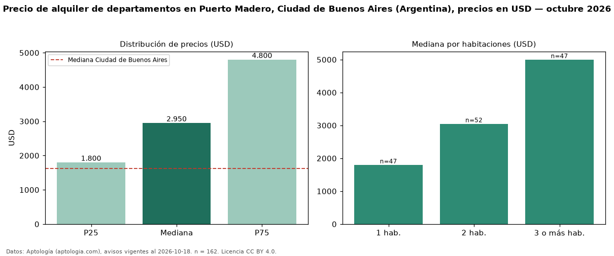

Precio de alquiler de departamentos en Puerto Madero, Ciudad de Buenos Aires (Argentina), precios en USD — octubre 2026
Con 162 avisos vigentes, el canon mediano de departamentos en alquiler en Puerto Madero, Ciudad de Buenos Aires (Argentina) es USD 2.950 al mes. Eso es 82 % por encima de la mediana de Ciudad de Buenos Aires para departamentos (USD 1.625). Por metro cuadrado, la mediana es USD 26,40/m² al mes (n = 153 avisos con área), 32 % por encima de Ciudad de Buenos Aires (USD 20,00/m²). Por precio mediano es el puesto 1 de 6 barrios de Ciudad de Buenos Aires con al menos 30 avisos de departamentos en alquiler (USD): entre las más caras. Con el precio por m² de venta del mismo segmento (USD 5.712/m²), la rentabilidad bruta implícita es 5,5 % anual (aproximación con medianas de ofertas distintas). La mitad central de los avisos va de USD 1.800 a USD 4.800 (razón 2,7), una dispersión alta. El área mediana anunciada es 104 m². El segmento con más oferta es el de 2 habitaciones (52 avisos, mediana USD 3.050); pasar de 1 habitación a 3 o más habitaciones cambia la mediana +178 %. Datos: Aptología (aptologia.com), CC BY 4.0 — https://www.aptologia.com/ar. Archivos: PDF, CSV con las cifras y gráfica PNG.

| Avisos únicos | 162 |
|---|---|
| Percentil 25 | COP 1.800 |
| Mediana | COP 2.950 |
| Percentil 75 | COP 4.800 |
| Mediana por m² | COP 26 |
Fuente: avisos vigentes de portales inmobiliarios recopilados por Aptología, deduplicados (mínimo 30 avisos únicos por celda). Precios pedidos, no cerrados. Fecha: 2026-10-18.